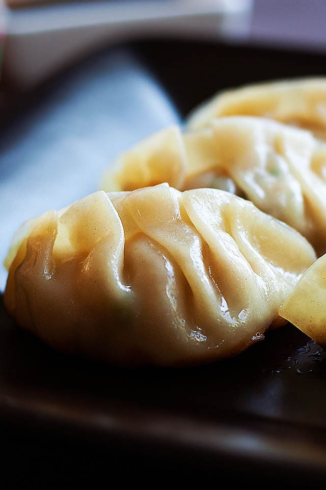

Gyoza
Preparation Time: 20mins
Cook Time: 10mins

Ingredients
- 1 packet store-bought gyoza wrapper
- oil for pan-frying
- water for steaming
Filling
- 8 oz. ground pork
- 2 oz. cabbage, shredded and cut into small pieces
- 1 thumb-sized ginger peeled and grated
- 1 clove garlic peeled and grated
- 1/2 tablespoon corn starch
- 1 tablespoon soy sauce
- 1/2 tablespoon sake
- 3 dashes white pepper
- 1/2 teaspoon sesame oil
- 1 tablespoon chopped scallion green part only
- 1 pinch salt
Gyoza Sauce
- 4 tablespoons Japanese Ponzu
- 1/2 teaspoon sesame oil
Instructions
-
In a bowl, combine all the ingredients in the Filling and blend well.
The Filling should be sticky and cohesive.
-
To make Gyoza Sauce, combine the Ponzu with the sesame oil in a small
dipping bowl. Stir to blend well.
-
To assemble the gyoza, place a piece of the gyoza wrapper on your palm
or a flat surface. Spoon about 1 teaspoon of the Filling onto the center
of the wrapper. Dip your index finger into some water and moisten the
outer edges of the dumpling wrapper.
-
Fold the gyoza over, press and seal the left end. Use your thumb and
index finger to make a pleat. Pinch to secure tightly. Repeat the same
to make the pleats. (Start with 3-4 pleats if you are a beginner). A
nicely wrapped gyoza should have a crescent shape.
-
Heat up the oil in a skillet or stir-fry pan over medium heat. Arrange
the gyoza and cover with the lid. Pan-fry the gyoza until the bottoms
turn golden brown and become crispy.
-
Add about 1/4-inch water into the skillet or stir-fry pan and cover the
lid immediately. The water should evaporate after a few minutes.
Continue to cook the gyoza for a couple of minutes to crisp
-
Remove the gyoza from the skillet or stir-fry pan and serve immediately
with the Gyoza Sauce.